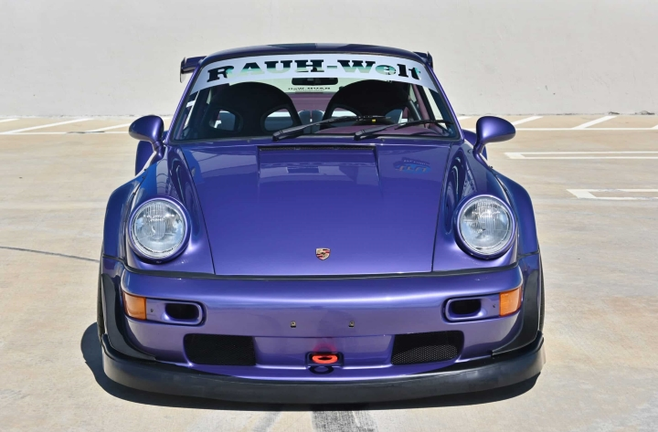

The Porsche 911 964 Turbo S is a highly sought-after model, produced in limited numbers between 1992 and 1993.
Only 86 units were built, making it a rare and collectible car. The Turbo S features a 3.3-liter turbocharged flat-six engine,
producing 381 horsepower and 362 lb-ft of torque, which allows it to accelerate from 0 to 60 mph in 4.6 seconds and reach a top speed of 180 mph.
The Turbo S also features unique design elements such as relocated driving lights, brake ducts, and a special thrust plate connected to a lightweight
flywheel, making it a highly desirable model for Porsche enthusiasts and collectors (Stuttcars).

One of the significant aspects of the Turbo S is its lightweight design, known as "Leichtbau."
This version is 400 pounds lighter than the standard Turbo, achieved by stripping out non-essential features like power steering,
air conditioning, and even using thinner glass. The car was fitted with RS-spec suspension, larger wheels, and improved brakes for enhanced
performance (Excellence) (Car Specs, Fuel Consumption) (Stuttcars) (Classic.com).
Dive into the MotorVault
Wise words from the author:
"Cars are not just transportation; they're an expression of freedom and a gateway to adventure,
so why stay locked in the vault when you can break free and feel the thrill."